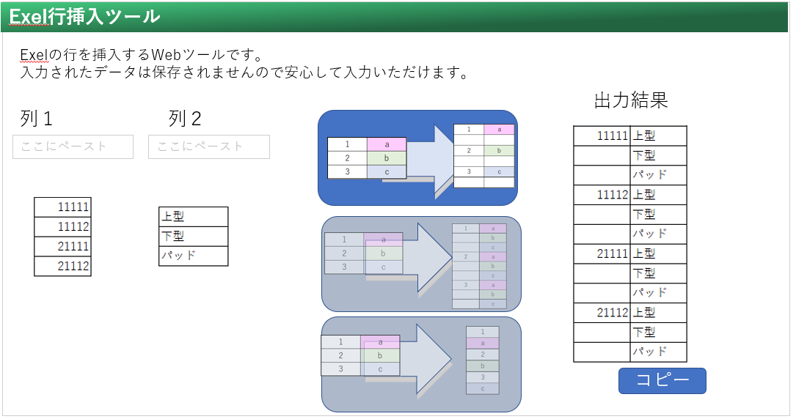

【製作に着手する前にイメージを作成】
Exel行挿入ツール（イメージ）

各動作に必要な機能を考える
(ユーザー動作)テキストエリアへの入力
入力イベント検知
テキストエリアの入力内容をJavaScriptで読込み(inText1,2)
inTextの行替えを判定して配列inArr1,2に格納
inArrをExel風に描画するhtml要素を作成
Webページ上でユーザーが入力内容を視覚的に確認できる
inputArr1,2を並び替えてoutArrに出力する
outArrをExel風に描画するhtml要素を作成
(ユーザー動作)コピーボタンを押す
クリックイベント検知
Exelに貼付けた時にイメージ通りの形になる様にoutArrを成形
クリップボードに保存
(ユーザー動作)変換パターン切替ボタンを押す
クリックイベント検知
並び替える関数を変更する
変換ボタンの画像を変える
そうしてできた
変換Webツールがこちら
です！